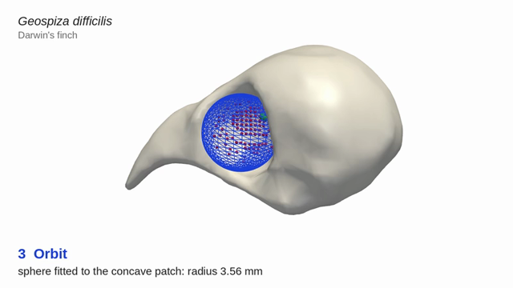

Analyse your own specimens
Install the code, run an example and check the input requirements before analysing your own skull meshes.
Biologist’s guide →Code and data
Python scripts for measuring skull size, orbital radius and neurocranial shape from prepared 3D meshes.
Robust parametric estimation of avian cranial morphology ↗
The methods, datasets and analyses are described in the accompanying paper.
The guides cover analysing new specimens and reproducing the results in the paper.
Install the code, run an example and check the input requirements before analysing your own skull meshes.
Biologist’s guide →Run the fitting scripts, statistical analyses, figure generation and numerical checks using the study datasets.
Reproduction guide →Select a measurement to see how it is obtained from the example skull.

The scripts use prepared, anatomically oriented meshes. Inspect the selected surface points and fitted shapes. The ellipsoid semi-axes describe neurocranial geometry, rather than direct measurements of the brain.
Fit an orbital sphere to one supplied skull and save the measurements, an inspection image and the fitting settings.
Download and extract the repository, install Python 3.12, then run these commands from the repository root. This example runs without MATLAB or an interactive 3D window.
The example uses G.DifficilisA.stl. The biologist’s guide also covers ellipsoid fitting and batch processing.
For raw scans, the repository includes the MATLAB remeshing code. Follow the MATLAB setup instructions before fitting.
Installation and usage instructions →python3 -m venv .venv
source .venv/bin/activate
python -m pip install -r requirements-quickstart.txt
python quickstart.pyA seven-minute tutorial covering mesh preparation, fitting and inspection. Commands and further details are in the written guide.
CHAPTER SHORTCUTS
Figure availability: The photograph, original skull surface and earlier-remeshed comparison meshes for Fig. 1 and Fig. S1 are included. See the figure-input guide for sources and credits.
Chapter times are approximate. Download video · Read the written guide
The main analyses use Darwin’s finches and their relatives. Applicability to other skulls is examined in Supporting Information Section S4.
| Dataset | Skulls | Use in the study |
|---|---|---|
| Darwin’s finches and relatives | 100 | Skull measurements and statistical analyses |
| Hawaiian honeycreepers and cardueline relatives | 51 (42 + 9) | Application of the finch fitting settings to additional bird skulls |
Exploratory examples. Two rodent skulls and four human crania are also included. The rodent fits did not identify the orbits. The human fits used adjusted settings, and none met both S4 quality criteria. The data documentation describes these results and limitations.
Kaikwan Lau and Gary P. T. Choi. Robust Parametric Estimation of Avian Cranial Morphology. arXiv:2511.06426 (2025). Read the preprint ↗
Citation and BibTeX · Code: Apache License 2.0 · See the data sources for attribution and reuse terms.